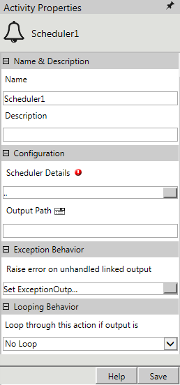
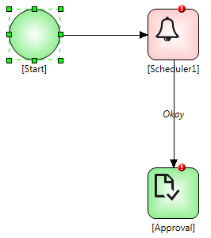
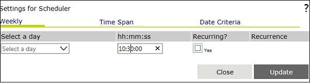

No
Activity description:
The Scheduler Activity can be used to schedule a task at a specified time, set on the basis of weekly, daily as well as hourly schedules. The output of the activity can be linked to the next activity. There is an option to set the recurrence count so that the user can restrict the number of recurrences.
Activity Properties:
The Scheduler activity has to be configured by specifying appropriate values for the different properties in the Activity Properties area. The Activity Properties can be accessed by clicking on the Activity Properties tool in the tool bar or by selecting the appropriate option from the right click menu for the Scheduler activity. The Activity Properties are organized under the following groups of related properties. The properties under each group are described in this topic.

Name & Description
The properties in the Name & Description group have been described below. You can use these properties to specify the name and description for the activity.
Name - This property can be used to specify a name for the activity.
Property Type: Optional (This property needs to be set only if necessary.)
Description - This property specifies a brief description to be displayed for the activity.
Property Type: Optional (This property needs to be set only if necessary.)
Configuration
The properties in the Configuration group have been described below. You can use these properties to configure the functionality of the activity.
Scheduler Details - The Scheduler Details property allows the user to specify the time settings for scheduling the specific workflow activity.
Property Type: Mandatory (This property must be set if the activity is to be executed.)
Steps to set the Scheduler Details property
See Scheduler: Scheduler Details for a detailed description of the Scheduler Details property window.
Output Path - The Output Path property allows the user to specify the output path that can be used to link to the next activity, and can be treated as the output of the Scheduler activity.
Property Type: Mandatory (This property must be set if the activity is to be executed.)
Looping Behavior
The property in the Looping Behavior group has been described below. You can use this property to specify the looping behavior of the activity.
Loop through this action if output is - This property is used to specify the condition for looping the activity by selecting an activity output from the drop down.
Property Type: Optional (This property needs to be set only if necessary.)
Activity outputs:
The Scheduler Activity does not have any standard return value. It will output the value specified by the user in the Output Path property.
Example for scheduling an activity on every Monday at 10.30 a.m:
Step 1: Design a workflow as shown in figure.

Step 2: Click the 'Scheduler Details' property and select Scheduler Details, following image appears.

Step 3: Select a day and set the time and click on the Update button to save the settings.
Step 4: Set the value for Output Path.
Step 5: Set Actor for approval.
Exception Behavior
Each activity has the Raise Error on Unhandled Linked Output property on click of which, it shows all the default configured mapped error outputs in red with their check boxes selected.
See Mapped Error Output for more details.
Note: The pause and Resume functionality of Workflow is not supported in this activity.